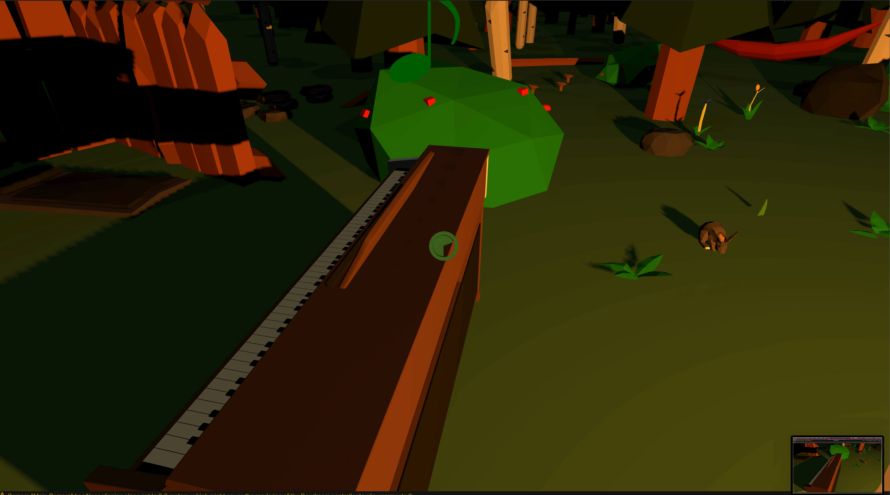
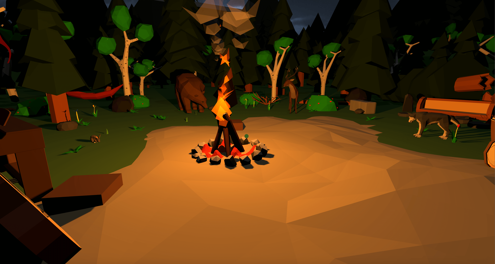

Research
I was really curious to see how VR can be integrated with music/auditory experiences, as I believe the heightened immersion could create a great multi-sensual experience.
Fantasynth
This VR experience visualizes a song by the musical artist N'to. It was made by HelloEnjoy and won a couple of awards. I really like how through the possibilities of VR, they created a whole new level of how we can experience music - something like Fantasynth would be very hard and expesive to implement in real life.
I find auditory part of any game, application or experience to be a crucial part of setting the atmosphere and creating a holistic experience, so it really impresses me how the developers of Fantasynth managed to join the visuals with the music. There is one drawback however, and that is that you have to have one of the more expeniv VR sets -like the Oculus Rift or HTC Vive.
Sing to the Stars in VR
This VR Game seems to be an unfinished project of Chocolate Fudge Games - an indie game developer Dan Scott. Unfortunately, there is not much about information to be found about the game or the developer - he was last active in 2016, but this concept really intrigued me.
The player uses their distorted voice to interact with the cubes, which results in a very relaxing interactive experience. I really like that the person experiencing the VR game can make the experience their own - as everyone's voice is unique. Additionally, using voice as a way to control something is unorthodox, but results in a memorable and unique style of play. Unfortunately, I was not able to find the app itself, but the showcase video seems very impressive.
Playthings VR
This VR game again makes use of music and interactivity of VR to create an immersive colorful world where you can literally play music on things. Playthings VR is made by Always & Forever Computer Entertainment, a New York based studio.
I like that the controls here are very intuitive even for a child - you just bang the drumsticks on anything that you see and it will react with some sound. This simple gameplay makes it an enjoyable experience that has endless possibilities thanks to the playful colors and range of sounds/music.
Tinkering
Unity
I decided to go with Unity for this challenge, so I searched up for some tutorials and tried out various VR functionalities. I also used Xcode for the first time, to run what I made on my phone.
Showcase 1
In the first showcase, I am using the Google cardboard SDK for Unity to follow a tutorial on how to use a raycaster with functionality of changing object attributes. I tinkered with the colors that are getting changed and the click possibility of the Cardboard SDK.
Showcase 2
In the second showcase, I elaborated more on how the raycaster works, and used a gaze click to have the player teleport between platforms, or to start/stop an object spinning. I was now equipped with the tool of clicking on game objects, which opened the possibilities for making interactions between the player and the environment around the player.
Showcase 3
In the third showcase, I played around with the unity's system of gravity, rigid bodies to make cars collide with each other, and the VR raycaster to trigger movement in the cars. I made a little game of "demolition derby", where each time, the outcome is slighty different based on which cars get triggered by the player.
Design and Build
Night Band
I took my curiosity from research - creating an experience that is heavily based on music and incorporating auditory sense, and combined it with what I learned throughout the tinkering stage.
I thought out a concept of interacting with musical instruments and making a relaxing experience that involves a symphony of audio and visual cues.
To set a relaxing atmosphere, I wanted to create a cozy-looking world - I found low poly models of nature, and was able to create a scene which to me seemed very nice and cozy. At this point, I got an idea of including animal models with animations, which I could then use for the experience. I implemented these, coded scripts, found individual instruments that fit together and joined everything in Unity.
The final product achieves exactly what I set out to do - a music-based VR experience with relaxing instruments, nice-looking world and a little surprise for the player. It also answers the topic of the challenge very well, as I have not found a similar experience for VR, so the novelty and originality of it is also very satisfying to me.
Short video explaining how I worked
Showcase
Clean showcase - just the experience
Explained showcase on an iOS device
Reflect
AR/VR in general and my vision of AR/VR in the future
I remember when I first heard about the Oculus Rift, how excited I was about the possibility of being IN the game world. I always wanted to try it out and even own a tech wonder such as a VR headset, as I found the concept really exciting. I think that particularily with music and auditory inputs, VR can offer a really nice and immersive experience. Additionally, I think horror games and stories in VR have a larger impact, so taking all of these into consideration, I believe that with VR, it is possible to achieve a higher emotional reaction and immersion than in any other way.

On the other hand, I think VR technologies have a future mainly in the gaming world, as they are very intense and might not be suitable in more serious contexts. I hope that in the future, VR will include not only visuals and auditory input, but also touch, smell and even taste. Finally (and hopefully), if it advances to a degree of super-realism, it could even replace things like ZOOs, circuses and similar, effectively eliminating problems (such as animal cruelty) bound to these, while retaining the entertainment.

My final product
Honestly, I am very satisfied with how my final product turned out. It does exactly what I envisioned and set out to create. I experienced hours of frustrations trying to figure out minor details of the scripts, and finding the right words to google when searching for answers to my development questions. I really enjoyed working with the low poly models, as they exactly mirrored the vibe I was going for. With the lighting and the right music (which also took way too much time to find and fit :D ), I feel like I made a cozy and relaxing experience, so I am happy about that. If I was to improve some aspects, it would probably be the animations and further interactions with the animals, but in the limited time that I had, I am quite proud of the result.
My experience using this technology
I was really surprised about how easy developing for VR could be. Of course it required building on foundations such as the Google Cardboard SDK - which heavily simplified creating the basic set up of raycaster pointer and head-mounted display, but still, it is not that different from developing for a desktop computer. One tricky thing is the limited control and inputs, which basically come down to looking at something, taking the sight off of it and looking at it for a little longer to trigger a "click" - with such a small sample of functional interactions, as a developer, you must really think of a simple way to develop your vision, which I found to be a very fun challenge. It really makes you re-think how a technology is used, as you cannot take controls for granted.
